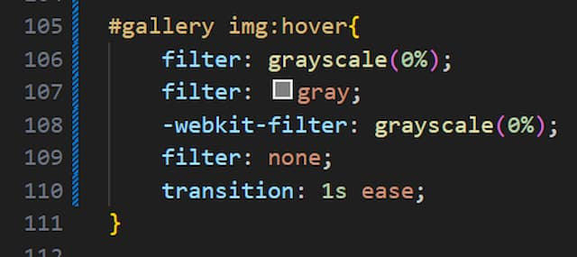

Image Hover Effects
When it comes to adding more style to your web page, a great way to add some more life to it is through Images Hover Effects. Not only are they simple to add, but there are a wide variety of effects to choose from that add a subtle addition to your web page while at the same time greatly increasing the appeal of the site. As you read further, I will be discussing the uses of Images Hover Effects while providing a demonstration of how to your your own effects. As I said before, there are many different effects to choose from when it comes to Image Hover Effects, for this example, I will only be focusing on adding a shadow to an image and having the image change from black and white to color when hovered over.
First, lets take a look at how we can make a border appear around our image so that when we hover over it, it looks like the image raises up a little. To do this we create a box shadow and add multiple layers which will become our shadow behind the image.
What really happening here is the image is moving over slightly and there are borders appearing to make it look like the photo is raising upwards. One detail I found is that if all the layers are different colors instead of one color for all, it make it look like the image is stacked on top of a bunch of other photos.
Now, making an image go from black and white into color is also very simple and add a sleek look to the webpage. We start by adding a grayscale over the image at 100% so that it is completely black and white. To undo that when we hover, we make it so that the grayscale takes 1 second to go back to 0% and when we stop hovering over the image, the grayscale takes 1 second to return back to 100%. To see all of these Image Hover Effects in action, check out my photo gallery that is just above this blog post.